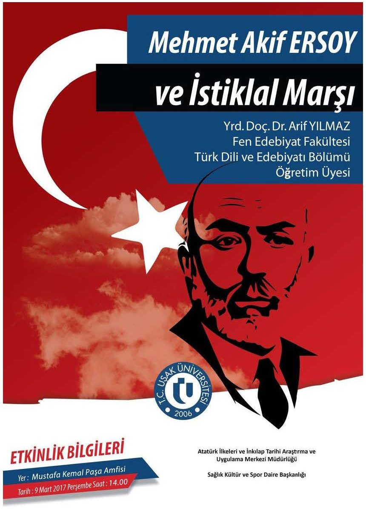
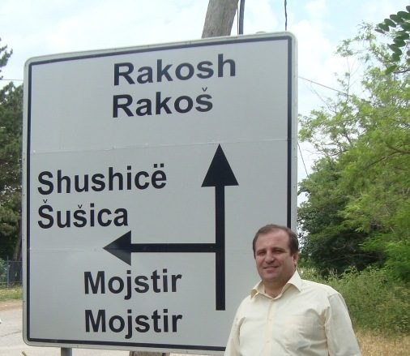
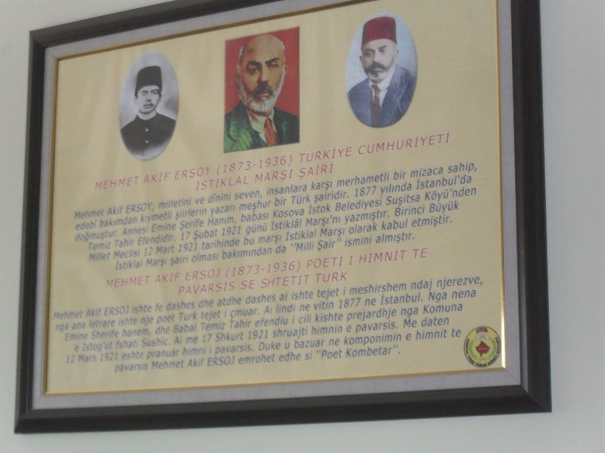
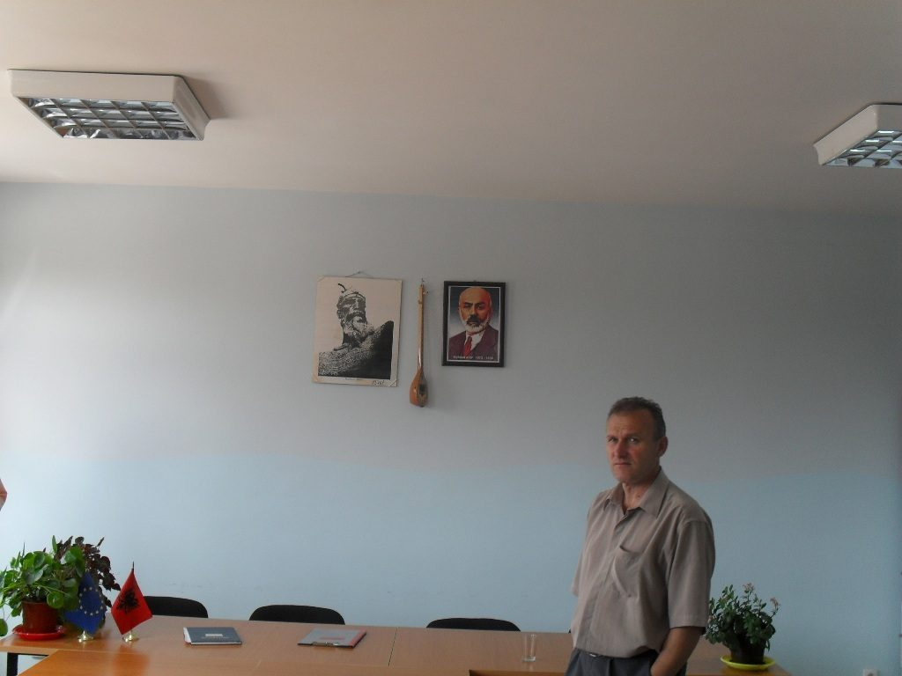
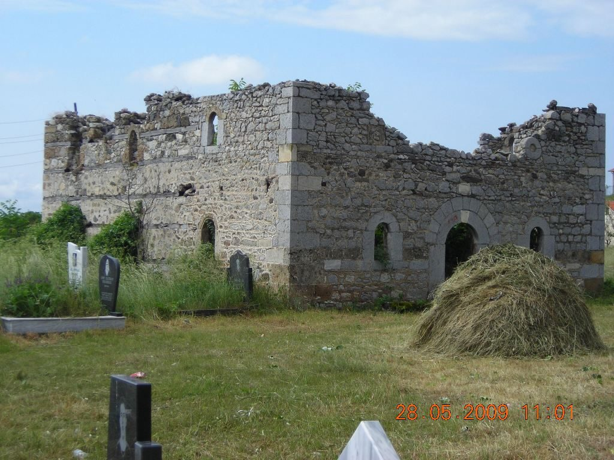

Author file
Mehmet Âkif Ersoy
1873–1936

Two articles examine the vernacular language and the elements of folk culture in Mehmet Âkif Ersoy’s poetry. Âkif, who wrote the words of the Turkish National Anthem (İstiklâl Marşı), and the anthem itself were the subject of a public lecture given at Uşak University in 2017, on the anniversary of its adoption. The last part of the file presents photographs from Šušica in Kosovo, the village of Âkif’s father, Tahir Efendi.
Works
Articles
- 2012“Mehmet Âkif Ersoy’un Şiirlerinde Halk Kültürü Ögeleri.” Mustafa Kemal Üniversitesi Sosyal Bilimler Enstitüsü Dergisi 9 (17): 163–194. Abstract and full textFolk Culture Elements in the Poems of Mehmet Akif Ersoy
- 2009“Mehmet Âkif Ersoy’un Şiirlerinde Halk Dilinin Kullanımı.” Mustafa Kemal Üniversitesi Sosyal Bilimler Enstitüsü Dergisi 6 (11): 189–210. Abstract and full textThe Using of Public Speech in the Poems of Mehmet Akif Ersoy
Public lecture
- 2017“Mehmet Akif Ersoy ve İstiklal Marşı.” Uşak University, Mustafa Kemal Paşa Amphitheater, 9 March 2017. The lecture was organized by the university’s Research and Application Center for Atatürk’s Principles and the History of the Turkish Revolution and its Department of Health, Culture and Sports during the week commemorating the adoption of the National Anthem and Mehmet Âkif Ersoy. Poster[Mehmet Akif Ersoy and the National Anthem]

Šušica, the village of Âkif’s father
Šušica (Shushicë in Albanian, Şuşiçe in Turkish), near Istog in Kosovo, is the village of Mehmet Âkif’s father, Tahir Efendi. The photographs were taken during a journey through the Balkans in May 2009.









Photographs from Arif Yılmaz’s archive.